Vidhi Jainemail: {first name}{last name} at cmu dot edu I am a PhD student at the Robotics Institute (RI), part of the School of Computer Science at Carnegie Mellon University (CMU), where I am advised by Yonatan Bisk. I am also a student researcher at Google DeepMind Robotics, mentored by Debidatta Dwibedi. Before this, I was an an AI resident at Meta AI (formerly FAIR) working with Akshara Rai and Yixin Lin. I am interested in learning algorithms for interactive and adaptable embodied AI. My long term vision is to develop robots that can perform multiple tasks around the home and learn new skills from their users. My research focuses at the intersection of language, vision and actions to enhance real-time perception, motion control and dialog in robots. CV | GitHub | Google Scholar | LinkedIn | Twitter |

|
News |
 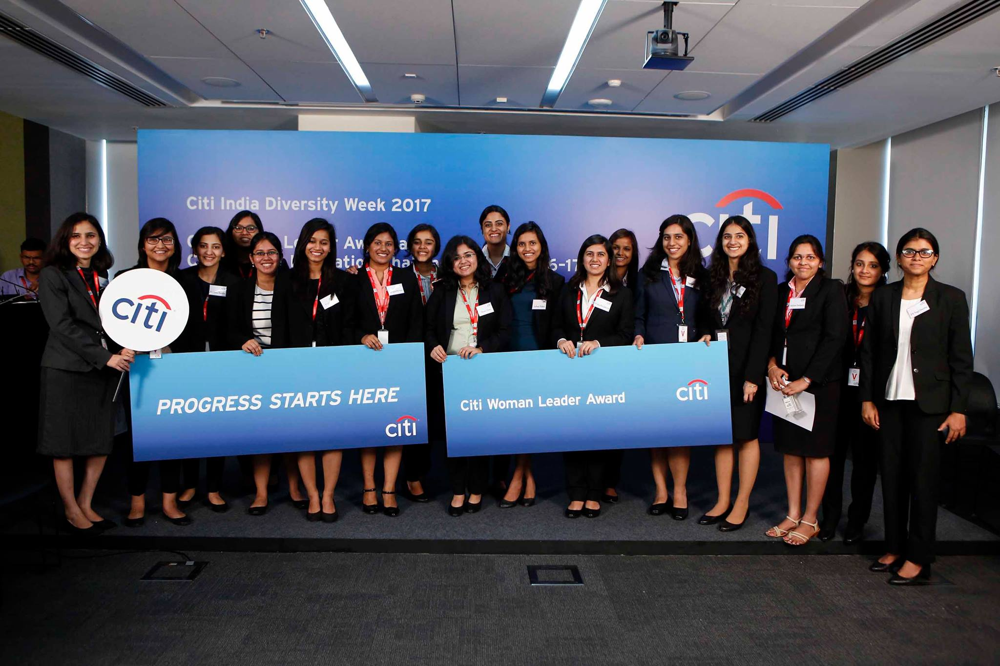
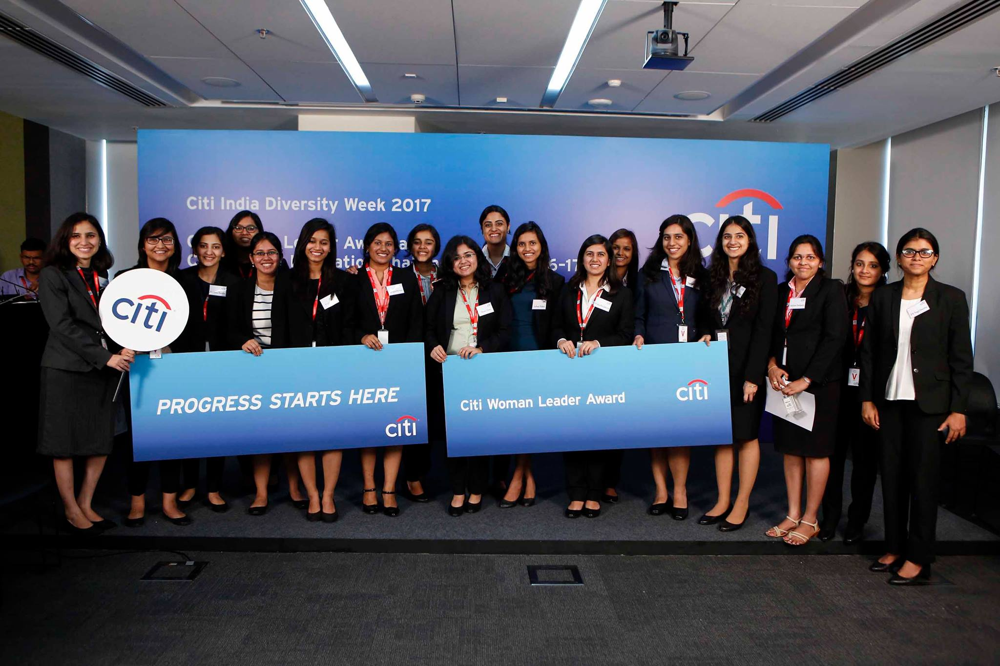
ResearchMy research can be summarized into four scopes - understanding the goals and intentions of other agents, learning from data without extensive supervision, modeling spatio-temporal context for improved task-efficiency, and explaining the machine learning model's predictions. Here is a list of my relevant research publications and presentations. The key papers are highlighted. |
| 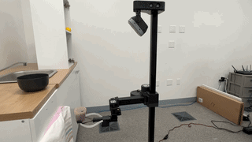 |
Spatial Language Attention Policies for Efficient Robot LearningPriyam Parasher, Vidhi Jain, Xiaohan Zhang, Jay Vakil, Sam Powers, Yonatan Bisk and Chris Paxton." 7th Annual Conference on Robot Learning (CoRL), 2023 webpage | arXiv | code | reviews | bibTeX |

|
HomeRobot: Open-Vocabulary Mobile ManipulationSriram Yenamandra, Arun Ramachandran, Karmesh Yadav, Austin S Wang, Mukul Khanna, Theophile Gervet, Tsung-Yen Yang, Vidhi Jain, Alexander Clegg, John M Turner, Zsolt Kira, Manolis Savva, Angel X Chang, Devendra Singh Chaplot, Dhruv Batra, Roozbeh Mottaghi, Yonatan Bisk, Chris Paxton. 6th Annual Conference on Robot Learning (CoRL), 2023 webpage | arXiv | code | reviews | bibTeX |

|
Transformers are Adaptable Task PlannersVidhi Jain, Yixin Lin, Eric Undersander, Yonatan Bisk and Akshara Rai. 6th Annual Conference on Robot Learning (CoRL), 2022 webpage | arXiv | video | code | reviews | bibTeX |
| 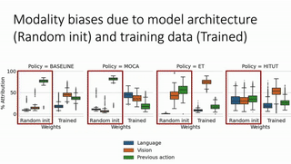 |
MAEA: Multimodal Attribution in Embodied AIVidhi Jain, Jayant Sravan Tamarapalli, Sahiti Yerramilli, and Yonatan Bisk. NeurIPS, 2022 webpage | arXiv | video | reviews | bibTeX |
| 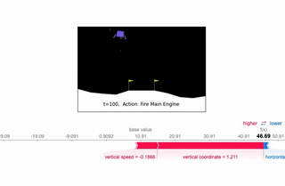 |
Towards Explainable Embodied AIVidhi Jain Masters thesis, 2021 pdf | bibTeX |
| 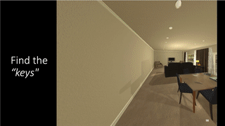 |
Learning to capture spatial semantic priors for indoor navigationVidhi Jain, Shishir Patil, Prakhar Agarwal and Katia Sycara. NeurIPS Object Representations for Learning and Reasoning (ORLR) , 2020 pdf | webpage | arXiv | video | code | bibTeX |

|
Predicting strategies in simulated search and rescue tasksVidhi Jain, Rohit Jena, Huao Li, Tejus Gupta, Dana Hughes, Michael Lewis and Katia Sycara. NeurIPS AI for Humanitarian Assistance and Disaster Response (AIADR) , 2020 arXiv | video | slides | bibTeX |
| 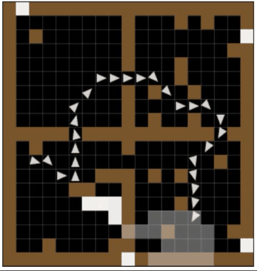 |
Learning to navigate in unseen cluttered environmentsVidhi Jain, Ganesh Iyer and Katia Sycara. NeurIPS Women in Machine Learning workshop (WiML), 2020 pdf | poster | bibTeX |
| 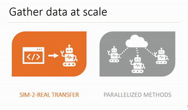 |
Coping with sample inefficiency in deep reinforcement learningVidhi Jain, Simin Liu, and Ganesh Iyer. ICML Women in Machine Learning Un-Workshop (WiML), 2020 pdf | slides | bibTeX |
| 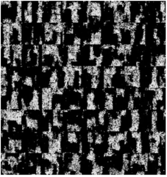 |
Investigating the viability of Generative Models for Novelty DetectionVidhi Jain Bachelors thesis, 2018 pdf | bibTeX |
| 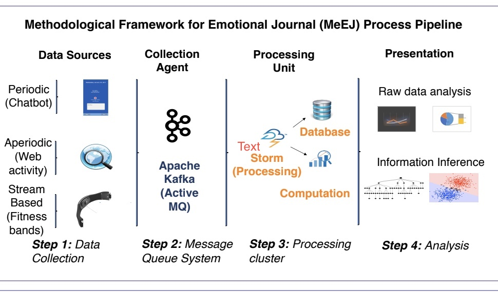 |
Symptomatic Diagnosis and Prognosis of Psychiatric Disorders through Personal GadgetsVidhi Jain, Simin Liu, and Ganesh Iyer. ACM CHI Extended Abstracts (CHI EA '17), 2017 pdf | webpage | slides | poster | bibTeX |
| 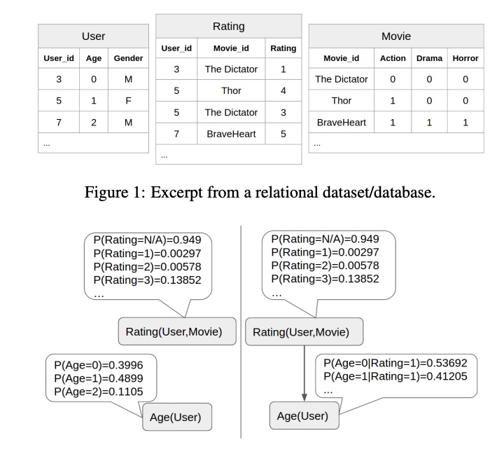 |
Model Selection Scores for Multi-Relational Bayesian NetworksSajjad Gholami, Oliver Schulte, Vidhi Jain, Qiang Zhao. IJCAI Declarative Learning Based Programming (DeLBP), 2017 pdf | code | bibTeX |
| 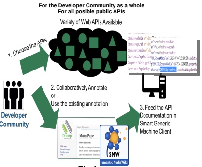 |
Empowering API Consumer Community: Collaborative Annotation of Web API Documentation for Semantically Structured FormatSajjad Gholami, Oliver Schulte, Vidhi Jain, Qiang Zhao. Grace Hopper Conference India (GHCI), 2016 pdf | poster | |
ProjectsMy broad focus is to incorporate the fundamental advancements of learning algorithms towards human-centric AI. But before deciding upon this goal, I explored other research areas such as semantic web , software-defined networking, and applications for social good. Here is a list of my academic projects. These include coursework, side projects and unpublished research work. |
Learning Diverse Goal-Conditioned Policies for Frontier Selection in Navigation2020| pdf | slides | bibTeX | |
Towards Zero-Shot Alignment and Retrieval for Forensic Detection2019| pdf | slides | bibTeX | |
Implemented Distributed Consensus Protocol: Raft2017| webpage | code | |
Software-defined Networking (SDN)2017| pdf | webpage | |
Social Media Data Classification and Analysis2017| pdf | webpage | bibTeX | |
Algorithm in prolog for verification of type-correctness of expressions2017| code | |
Automated Psychiatrist2017| pdf | webpage | code | slides | bibTeX | |
Voice Assisted Educational Application for Visually Challenged2017| video | code | |
Self-Learning Location Safety Index prediction based upon Crime rate analysis and Group-Aware Feedback2016| code | |
Talks |
Education |

|
Design and source code from Leonid Keselman's Jekyll fork and Jon Barron's website |